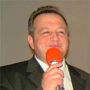
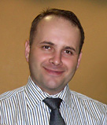

|
В
главном - единство, во второстепенном - свобода, а во всем - любовь!
|
Другие
церкви
Армия Спасения, как международное христианское движение, представляет собой евангелическую ветвь Христианской Церкви. Ее учение основано на Библии; ее служение вытекает из любви к Богу и практической заботы о нуждах людей. Ее миссия - проповедовать Евангелие Иисуса Христа, удовлетворять основные человеческие нужды, давать личное наставление и способствовать духовному и нравственному возрождению и физическому восстановлению всех нуждающихся, попадающих в сферу ее опеки, независимо от расы, цвета кожи, вероисповедания, пола и возраста. |
Пастор Эммануил Мукенди 416-222-2031 |
Вечное СловоOur doctrinal statements We believe that the Scriptures are the inspired Word of God; that inspiration of the original autographs was plenary and verbal and, hence, the sixty-six books of the Bible are inerrant; that it is the sole authority for faith and practice in all matters to which it speaks. We believe there is one God eternally existing in three persons: Father, Son, and Holy Spirit; that all three possess equally all the same attributes, nature, perfections, and characteristics of personality. We believe in the personality and deity of the Holy Spirit; that He is the infallible author and interpreter of the infallible Word; that He convicts, regenerates, indwells, empowers, instructs, and guides the believer in living, service, and worship through His gifts; that in this age He baptizes and permanently indwells and seals all believers into one body; that His chief purpose is to witness and glorify Christ; that His fullness and power and control are appropriated in the believer's life by faith. Наши служения проходят по воскресеньям, в 10 часов утра по адресу: Party Room of 175 Hilda Ave., Toronto |
Пастор Юрий Иордакиев 416-901-9805 |
Божья РекаМы - группа верующих, объединенных верой в Иисуса Христа, как нашего Господа и Спасителя. Мы верим, что Иисус Христос - Бог, пришедший на нашу грешную землю для того, чтобы спасти всех людей от греха и проклятия. Мы верим, что Бог призвал нас для служения русскоязычным людям, живущим в районе большого Торонто. Мы приехали в Канаду из разных мест бывшего Советского Союза и Господь объединил нас - людей разного возраста, происхождения и социального статуса в одной семье - церкви Иисуса Христа. Мы верим, что каждый человек нуждается в спасительной силе Духа Святого, который действует сейчас, обличая весь мир о грехе. Адрес церкви: 70 Hilda Avenue Ontario |
Пастор Юрий Супрунов 416-901 9805 моб. 647-831 9256 |
Славянская Евангельско-Баптистская Церковь г. ТоронтоМЫ ВЕРИМ: В единого истинного и Святого Бога, открывающегося в трех Лицах: Отца, Сына и Святого Духа. "Итак идите, научите все народы, крестя их во имя Отца и Сына и Святаго Духа" (Мтф. 29:19). В Иисуса Христа, Сына Божия, предназначенного Богом Отцом для спасения человека прежде основания мира: "...зная, что не тленным серебром или золотом искуплены вы от суетной жизни, преданной вам от отцов, но драгоценною Кровию Христа, как непорочного и чистого Агнца, предназначенного еще прежде создания мира, но явившегося в последние времена для вас" (1 Пет. 1:18-20). .......... В крещение Святым Духом со знамениями говорения на иных языках Дано в день Пятидесятницы, это было обещание от Отца, которое исполнилось после воскресения Иисуса Христа. Крещению предшествуют рождение свыше: "И исполнились все Духа Святаго, и начали говорить на иных языках, как Дух давал им провещевать" (Деан. 2:4). Адрес церкви: 95 GLADSTONE AVENUE, TORONTO, ONTARIO M6J 3L1 CANADA |
Пастор Юрий Супрунов 416-901-9805 пастор Юрий Супрунов |
БлаговестиеМЫ ВЕРИМ: В единого истинного и Святого Бога, открывающегося в трех Лицах: Отца, Сына и Святого Духа. "Итак идите, научите все народы, крестя их во имя Отца и Сына и Святаго Духа" (Мтф. 29:19). В Иисуса Христа, Сына Божия, предназначенного Богом Отцом для спасения человека прежде основания мира: "...зная, что не тленным серебром или золотом искуплены вы от суетной жизни, преданной вам от отцов, но драгоценною Кровию Христа, как непорочного и чистого Агнца, предназначенного еще прежде создания мира, но явившегося в последние времена для вас" (1 Пет. 1:18-20). .......... В крещение Святым Духом со знамениями говорения на иных языках Дано в день Пятидесятницы, это было обещание от Отца, которое исполнилось после воскресения Иисуса Христа. Крещению предшествуют рождение свыше: "И исполнились все Духа Святаго, и начали говорить на иных языках, как Дух давал им провещевать" (Деан. 2:4). Адрес церкви "Благовестие": 14430 Bathurst Street, Aurora, Ontario L4G 3L2 |
Пастор Телефон: (416) 752-9382 Телефон: (416) 380-4143 Телефон: (416) 445-3784 Телефон: (416) 504-5155 Pastor@Blagovestie.org |
БлаговестиеЦерковь Евангельских Христиан в ТоронтоRussian Ukrainian Church of Evangelical Christian in Toronto Сайт церкви:http://www.blagovestie.org/index.html Мы - это Церковь Евангельских Христиан, объединенных одной верой - верой в Иисуса Христа, Спасителя мира. Объединенных одной любовью - к Иисусу Христу, нашему личному Спасителю. И обединенных одной надеждой - надеждой на Иисуса Христа, которая есть для нас как крепкий и безопасный якорь в этом бушующем мире. Мы объединены одним желанием - чтобы еще множество людей услышавши Евангелие нашего Господа Иисуса Христа, обрели прощение грехов, спасение и вечную жизнь. Богослужения по воскресеньям с 10 утра до 12 дня, а также вечером – с 6 до 7 вечера. Молитвенные Богослужения проводятся по средам в 7 вечера. Адрес: Русско-Украинской Церкви Евангельских Христиан 24 Carr Street, Toronto, Ontario M5T 1B5 Canada |
 Пастор Владимир Андриец (519) 282-3564 pastor@lgcon.ca |
Лондонская Церковь Евангелия (London Gospel Church)Наша церковь состоит из верующих людей разных национальностей, говорящих на разных славянских языках. Но всех их объединяет радость, мир и желание вместе поклоняться Богу и служить ближнему во имя Бога. Мы стремимся к тому, чтобы каждый приходящий в церковь мог найти успокоение, радость общения и понимание. Вероучение: БИБЛИЯ Библия - совершенное, полностью непогрешимое, завершенное и вседостаточное откровение Бога роду человеческому. Она истинный источник познания Бога и Его воли. БОГ Мы веруем в триединую, единосущную Личность Бога - Отца, Сына и Духа Святого ИИСУС ХРИСТОС Бог от вечности предопределил Своего Единородного Сына Иисуса Христа, как жертву умилостивления за грех, для искупления и спасения людей. Он единый Спаситель и Посредник между Богом и человеком. ДУХ СВЯТОЙ Дух Святой есть Личность и обладает всеми Божественными свойствами. Он ниспослан в день Пятидесятницы для свидетельства о Христе, для прославления Его и созидания Церкви. ....... ГРЕХ Человек нарушил повеления Бога и впал в грех. Через грехопадение Адама всё человечество унаследовало грех и смерть. ........ Адрес: London Gospel Church 1541 Fanshawe Park Rd. East London, ON N5X 3Z9 |
 Пастор Даниил Калиновский daniellogmm@yahoo.com +1 (647) 456-7343 |
Новая ЖизньМЫ ВЕРИМ: В единого истинного и Святого Бога, открывающегося в трех Лицах: Отца, Сына и Святого Духа. "Итак идите, научите все народы, крестя их во имя Отца и Сына и Святаго Духа" (Мтф. 29:19). В Иисуса Христа, Сына Божия, предназначенного Богом Отцом для спасения человека прежде основания мира: "...зная, что не тленным серебром или золотом искуплены вы от суетной жизни, преданной вам от отцов, но драгоценною Кровию Христа, как непорочного и чистого Агнца, предназначенного еще прежде создания мира, но явившегося в последние времена для вас" (1 Пет. 1:18-20). .......... В крещение Святым Духом со знамениями говорения на иных языках Дано в день Пятидесятницы, это было обещание от Отца, которое исполнилось после воскресения Иисуса Христа. Крещению предшествуют рождение свыше: "И исполнились все Духа Святаго, и начали говорить на иных языках, как Дух давал им провещевать" (Деан. 2:4). Адрес центра Новая Жизнь: 14430 Bathurst Street, Aurora, Ontario L4G 3L2 |